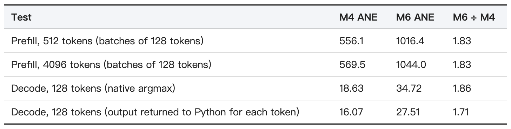
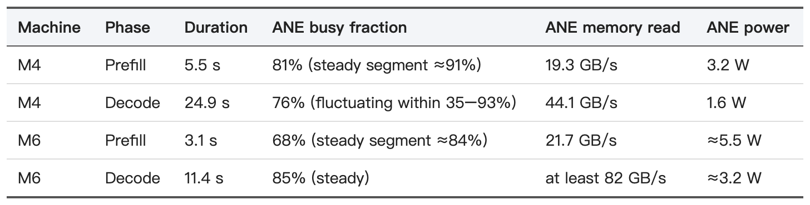
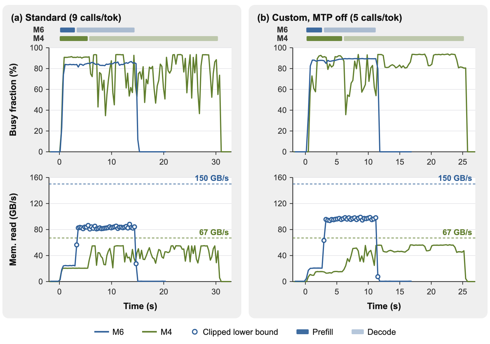
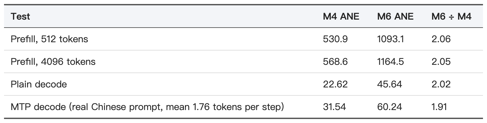
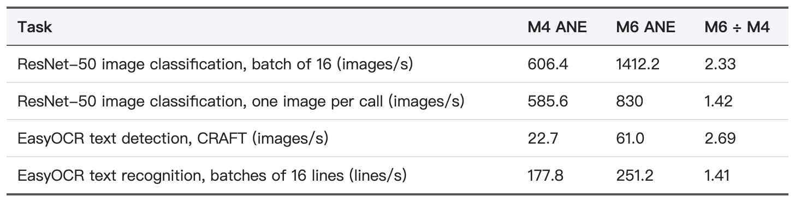
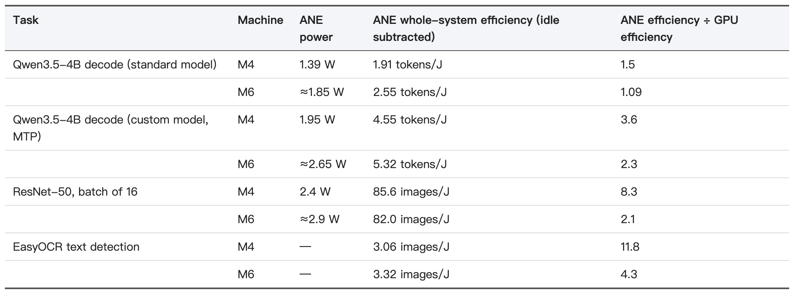
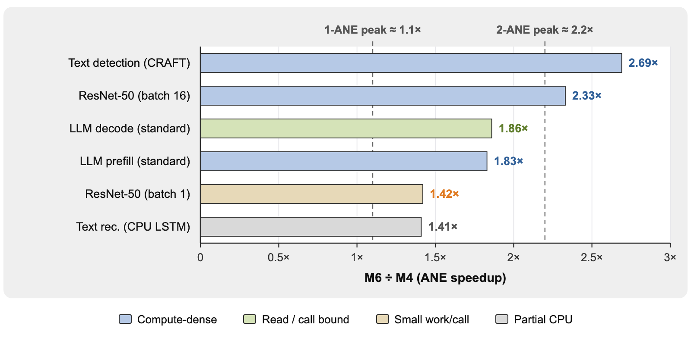
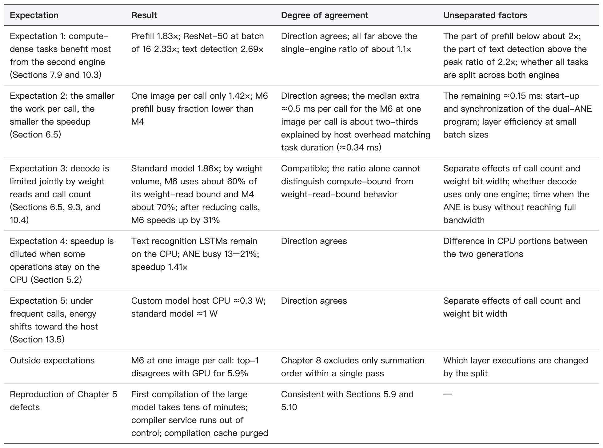

This post is chapter 14 of the report "Microarchitecture of the Apple M6 Neural Engine: An Empirical Study Based on Compiled Artifacts, Execution Traces, and Power Measurements", reproduced unchanged. Full report: web; data and tools: GitHub. Section, figure and table numbers follow the report.
Earlier chapters used purpose-built microbenchmarks to study the individual parts of the M6 ANE, from which several inferences about real workloads can be drawn. This chapter tests those inferences against practical application workloads. The data come from a set of application benchmarks that we ran on two Mac mini systems, M6 and M4, covering three types of task: large language model (LLM) workloads, image classification, and text recognition. Speech-to-text speed data were affected by a transient system state and are not used; only the compilation observations from that run are retained. The application benchmarks recorded only per-call time, ANE busy fraction, memory read rate, and power; they did not record firmware timestamps or per-engine interrupt counts. Moreover, the comparison spans two chip generations, so differences in clock, bandwidth, and host CPU are confounded with one another. Accordingly, what this chapter can test is whether the results agree in direction and approximate magnitude with the expectations. A phenomenon consistent with a mechanism does not validate that mechanism, and we point out, item by item, every factor that was not separated.
This chapter first derives five classes of observable expectations from the conclusions of earlier chapters (Section 14.2), and then reports the results group by group. Each group answers three questions: which expectation it matches, how far it can be explained, and what remains unseparated. This chapter has four main conclusions. First, on compute-dense tasks with large work per call, the M6 ANE is 1.8–2.7 times faster than the M4, far above the ratio of about 1.1 for a single engine's peak, which is consistent with the expectation that the second engine mainly benefits compute-dense tasks. However, the 2.69× of text detection exceeds the dual-engine peak ratio (about 2.2×), and this report cannot explain the excess. Second, the speedup narrows markedly on tasks with very little work per call; when processing one image at a time, the M6 is only 1.42× faster, in the direction expected from the growing share of host overhead. Calculated from the host overhead corresponding to the task duration, this accounts for about two-thirds of the additional time on the M6, while the remaining about 0.15 ms is not separated. Third, LLM decode is 1.86× faster on the M6, but the ratio of engine counts and the ratio of weight-read bandwidth are both about 2, so this factor by itself cannot show whether decode is limited by weight reads or by calls. When converted to weight-read volume, the M6 uses only about 60% of its weight-read bound, below the about 70% of the M4; reducing the number of calls raises speed by 31%. This agrees with the expectation that decode is limited by both weight reads and the number of calls per token, but the custom model also changes the weight bit width, so the effect of the number of calls is not separated on its own. Fourth, the model that reduces the number of calls draws about 0.3 W of host CPU power, below the about 1 W of the standard model, which is consistent with the expectation that energy shifts toward the host under frequent calls. In addition, the ANE is more energy-efficient than the GPU on the same machine for every task whose power was measured.
14.1 Test Setup
The application benchmarks were run on two Mac mini systems, each with 16 GB of memory and 256 GB of storage, both running macOS 27.0.1 (26A434). On both machines, other applications and iCloud sync were turned off, and the same model files, verified by SHA256 checksum, were used. Speed tests were run without monitoring. For ANE busy fraction, memory read bandwidth, and power, a separate run with monitoring was performed; monitoring data were obtained from anemon [27], powermetrics, SMC power rails, and IORegistry. Small-model tasks were run with Core ML, with the compute units set to CPU_AND_NE; for power comparisons, the same model files were also run with CPU_AND_GPU as a reference.
Power data must be interpreted with caution. As described in Chapter 13, the M6 has no readable power rail dedicated to the ANE, so the M6 ANE power in the benchmarks was estimated from SMC power rails. PP0b also supplies the S cores and P cores of the CPU, so this value is biased upward when the host-side runner occupies many CPU cores. In addition, the M4, which is used as a daily-use machine, often had background programs running during testing, and whole-system idle power varied between 7 and 15 W. Accordingly, Section 14.5 relies mainly on "whole-system power minus idle power" when comparing energy efficiency. The benchmark data of this chapter are kept in our benchmark records; at present, only the ANE resource curves used in Figure 14-1 have been organized into the code repository (Appendix B.3).
14.2 Testable Expectations
Based on the conclusions of the earlier chapters, we formulate five classes of expectations for practical workloads. To provide a comparison across the two chip generations, we give, where possible, the approximate magnitude of M6 relative to M4.
Expectation 1: compute-dense tasks with large work per call benefit most from the second engine. The FP16 direct-convolution peak of a single M6 engine is 21.1 TFLOPS, and that of the M4 is about 19 TFLOPS (Table 7-14), so the M6 is only about 10% higher; the two M6 engines together provide 42.3 TFLOPS, and on compute-bound networks the scaling efficiency is about 96% (Section 10.3). Therefore, if the compiler splits this class of task across both engines, the M6 should be about 2× faster than the M4, with an upper bound of about 2.2×, the peak ratio; if no split occurs, it should be only about 1.1× faster.
Expectation 2: the smaller the work per call, the smaller the speedup. Each synchronous call incurs about 0.16–0.36 ms of host overhead outside the ANE task, which grows with task duration (Section 6.5), and a dual-ANE program adds about 30 µs more (Section 10.3). This overhead does not shrink as the ANE gets faster; the shorter the task, the larger its share.
Expectation 3: decode of a large language model is limited by weight reads and also by the number of calls per token. Every generated token requires reading all weights, and the second engine does not add usable weight-read bandwidth (Sections 9.3.4, 10.4, and 10.7); the measured M = 1 matrix multiplications are also not split across two engines (Section 5.8.4). Therefore, decode speed should be determined by weight-read bandwidth (about 67 GB/s for the M4 and about 145–150 GB/s for the M6; Section 9.6) and reduced by the host overhead per call; reducing the number of calls per token should raise the ANE busy fraction.
Expectation 4: when some operations remain on the CPU, the ANE speedup of a model is diluted. Core ML places operations that the ANE does not support on the CPU (Section 5.2), so the overall speedup is limited by the CPU portion.
Expectation 5: under frequent calls, a substantial share of energy is spent on the host CPU (Section 13.5); reducing the number of calls should lower host-side power.
It should be noted that Expectations 1 and 3 both give a ratio of about 2 in the cross-generation comparison, so the M6 to M4 ratio alone cannot distinguish compute-bound from weight-read-bound behavior; auxiliary indicators such as the ANE busy fraction and memory read rate are needed. The following sections test each group in turn.
14.3 Large Language Models
14.3.1 Standard Model
The test model is Qwen3.5-4B converted to Core ML format, with weights stored using 4-bit and 6-bit palettization; each generated token requires reading about 2.56 GB of weights. The model is split into 8 segments of 4 layers each, and each segment has two functions: per-token decode, and prefill in batches of 128 tokens (prefill, that is, processing a batch of input tokens at a time). Table 14-1 compares the speed of the two ANE generations.
Table 14-1. Speed of Qwen3.5-4B on the ANE (tokens/s)

Prefill processes 128 tokens at a time and is compute-dense; the M6 ANE is 1.83 times faster than the M4. In decode, one token is processed at a time; with native argmax, the M6 is 1.86 times faster. If the 248320-dimensional logits vector of every token is returned to Python for processing, both machines become slower, and the M6 speedup falls to 1.71 times, which shows that host-side processing directly affects ANE decode speed.
The ANE resource curves recorded in the application benchmarks reveal the bottleneck of the decode phase, as shown in Table 14-2.
Table 14-2. ANE resource curves of Qwen3.5-4B (prefill 3072 tokens, decode 384 tokens)

In the decode phase, for each generated token the runner calls the 8 segment models and the output layer in sequence, and the host writes the key-value (KV) cache back; that is, each token involves 9 ANE calls. Section 6.5 shows that each synchronous call incurs several hundred microseconds of host overhead outside the ANE task, and this overhead leaves the ANE idle between calls. During decode, the M4 ANE is idle for about a quarter of the time, and its busy fraction fluctuates widely, which may well be caused by this overhead 〔inferred〕.
Compared with the expectations in Section 14.2, the prefill phase is consistent with Expectation 1: the 1.83× speedup is far above the ratio of about 1.1× for a single engine's peak, which indicates that the second engine contributes; a memory read rate of only about 20 GB/s together with a high ANE busy fraction also indicates that this phase is compute-bound. However, the speedup is below the expected ratio of about 2×. The ANE busy fraction of the M6 in prefill in Table 14-2 (68%, steady segment ≈84%) is lower than that of the M4 (81%, steady segment ≈91%), which is compatible with the larger share of host overhead between calls after the M6 became faster (Expectation 2). The benchmarks did not record per-engine interrupt counts, so this report cannot confirm whether all segments of the prefill are split across the two engines.
The performance gain in decode cannot be explained by weight-read bandwidth alone. The 1.86× is of the same order as the weight-read bandwidth ratio (about 2.2), but it is also comparable to the ratio of engine counts, so this single ratio cannot distinguish the two explanations. More informative is the rate converted by the weight volume read. Each token reads 2.56 GB, so the M4's 18.63 tokens/s correspond to about 48 GB/s, about 70% of its weight-read bound, while the M6's 34.72 tokens/s correspond to about 89 GB/s, only about 60% of the bound. The M6 is farther from its bound, yet its ANE busy fraction (85%) is higher than that of the M4 (76%). This indicates that during decode, the M6 ANE is busy for part of the time without reading weights at full bandwidth; this part of the time may come from key-value cache reads and writes, the output layer, and the overhead of smaller layers 〔inferred〕. Therefore, the decode result is consistent with Expectation 3, but the 1.86× cannot be taken directly as evidence that decode is limited by weight reads. Figure 14-1 shows the busy fraction and memory read rate curves of the two chip generations during prefill and decode.

Figure 14-1. Resource curves of Qwen3.5-4B running on the ANE (prefill 3072 tokens, decode 384 tokens; anemon samples about every 0.25–0.3 s). The left column shows the standard model and the right column the custom model (MTP off). The top row is the ANE busy fraction (for the M6, the average of the two ANEs), and the bottom row is the memory read rate. The color bars above mark the prefill (dark) and decode (light) periods of each machine, with the horizontal axis timed from the start of prefill. The M6 read bandwidth is derived from IOReport histograms; during decode, some samples fall in the top histogram bin, and hollow points indicate that the readings are lower bounds only. The M4 busy fraction fluctuates widely during decode, between 35% and 93%, whereas that of the M6 is steady. The memory read rate of the M6 during decode is still far below its weight-read bound (data: ane_curve/; extraction: ane_curve_extract.py).
14.3.2 Custom Model for M6
We also optimized a version specifically for the M6 ANE to examine the upper bound of running a large language model on the ANE. Compared with the standard model, it splits the model into 4 segments of 8 layers each, which reduces the ANE calls per token from 9 to 5; all weights are quantized to 4 bits; the prefill computation graph is segmented in 32-token units; and speculative decoding based on multi-token prediction (MTP) is added, verifying 3 candidate tokens per call. The output quality of this version is low: its agreement rate with the original BF16 model is 80.0%, and its perplexity rises by 9.6%. Table 14-3 gives its speed.
Table 14-3. Speed of the custom model on the ANE (tokens/s)

Compared with the standard model, the plain decode speed of the custom model on the M6 rises from 34.72 to 45.64 tokens/s, an increase of 31%; on the M4 it rises by 21%. The resource curves show that, during custom-model decode on the M6, the ANE busy fraction is about 89% and the memory read rate is at least 95 GB/s. With MTP enabled, the duration for the same 384 tokens falls from 8.4 s to 4.1 s, roughly halved, while ANE power remains essentially unchanged. The prompt in this test differs from that of Table 14-3, in which the MTP speedup is 1.32 times; the difference comes from the fact that the hit rate of speculative decoding varies with content. These results are consistent with the deployment principle of keeping the ANE busy, described in Section 15.2: reducing the number of calls per token reduces the host overhead and idle time between calls, so the ANE utilization rises, and the CLPC also more readily keeps the clock at high DVFS states (Chapter 12). Reducing the number of bits per weight (Section 7.5) and using speculative decoding to complete the work of several tokens in a single call are two other means. It should be noted that during custom-model decode, the ANE memory read rate is at least about 95 GB/s, about 63% of the weight-read bound, which is close to the about 60% of the standard model; therefore, the bottleneck cannot be said to have shifted to weight-read bandwidth. With respect to Expectation 3, after the number of calls was reduced, the ANE busy fraction of the M6 during decode rose from about 85% to about 89% (Figure 14-1), and the speed increased by 31%; the direction is consistent with the expectation. However, the custom model also quantizes all weights to 4 bits and changes the segmentation scheme at the same time. A weaker clue is that the change in weight bit width is the same on both machines: if decode were limited only by weight reads, the speedups on the two machines should be similar, whereas in fact the M6 improves by 31% and the M4 only by 21%. The M6 is faster, so the share of call overhead is larger, and the benefit of reducing the number of calls should also be larger; this is compatible with the number of calls playing a role 〔inferred〕. The prefill and decode of the custom model on the M6 are both about 2 times faster than on the M4, slightly higher than the 1.8 times of the standard model and closer to the about 2–2.2× given by Expectations 1 and 3; this is compatible with the explanation that "the fewer the calls, the more completely the difference between the two hardware generations is revealed" 〔inferred〕.
14.4 Vision and Speech Models
Table 14-4 summarizes the speeds of three classes of small-model tasks on the two ANE generations.
Table 14-4. Speed of vision and speech models on the ANE

The tasks in Table 14-4 fall into two classes. The first class consists of tasks with large work per call. The text detection network performs convolutions on the entire 736×1280 image; all 63 operators run on the ANE, the ANE busy fraction exceeds 90% during execution, and the M6 is 2.69 times faster than the M4. When ResNet-50 processes 16 images at a time, the M6 is 2.33 times faster than the M4. Such tasks have fixed shapes and are compute-dense, and the computation per call is large enough to mask the call overhead. In the text recognition network, two bidirectional LSTMs can run only on the CPU; the ANE busy fraction is only 13–21%, and the speedup is only 1.41 times.
Relative to Expectation 1, the speedups of text detection and of ResNet-50 at a batch of 16 are far above the ratio of about 1.1× for a single engine's peak, which is consistent with the expectation that the second engine benefits compute-dense tasks. However, both exceed the dual-engine expectation: the 2.33× of ResNet-50 is slightly above the peak ratio of 2.2×, and the 2.69× of text detection clearly exceeds it. The peak ratio already incorporates the clock increase, so the excess cannot be explained by the clock. Possible causes are that the M4 does not itself reach its peak on these shapes (for example, because of tiling or weight-read limits; Chapter 9), or that the hardware Winograd of the M6 provides additional effective throughput for 3×3 convolutions (Section 7.4.3). The text recognition result is consistent with Expectation 4.
The second class consists of tasks with very little work per call. When ResNet-50 processes one image at a time, in the repeat measurement the M6 takes about 1.2 ms per call, or 830 images per second, whereas the M4 takes about 1.7 ms, or 586 images per second. The M6 is only 1.42 times faster, far less than the 2.33 times at a batch of 16. This direction agrees with Expectation 2: the smaller the work per call, the larger the share of fixed call overhead in total time, and the harder it is for the advantages of the compute array and the second engine to appear 〔timing〕.
The magnitude, however, is only partly explained. Converting the throughput at a batch of 16, the M6 needs about 0.71 ms per image and the M4 about 1.65 ms. When processing one image at a time, the M4 incurs about 0.06 ms of extra time per call, which does not exceed the fixed overhead of 0.09–0.16 ms per call for the M4 reported in the literature (Table 6-11). The median extra time per call for the M6 is about 0.5 ms, and about 0.85 ms if calculated from the average throughput of 640 images per second; the difference comes from a few slow calls (see below). Host overhead increases with task duration (Section 6.5.3). For a call of about 1.2 ms, the time outside the task is about 0.34–0.37 ms (Table 6-4); after subtracting the share amortized per image at a batch of 16, it is about 0.34 ms. This can explain about two-thirds of the extra median time, and the remaining about 0.15 ms may come from the start-up and synchronization of the dual-ANE program (a model run one image at a time is split across two ANEs; see below), or from reduced per-layer efficiency at small batch sizes.
Another phenomenon, unrelated to the transient state described above and reproducible, is that when the M6 processes one image at a time, the top-1 classification result disagrees with the GPU result for 5.9% of images, whereas at a batch of 16 and in all cases on the M4, the results agree completely. The M6 runs the model executed one image at a time split across two ANEs 〔IOReport〕. We suspect that the split changes the execution of some layers, for example operation fusion, whether Winograd is used, or whether intermediate results pass through DRAM with type conversion, and that this changes the top-1 result for a few samples near the decision boundary 〔inferred〕. Chapter 8 shows that fixed-point accumulation within a single pass is independent of summation order; however, whether multi-pass accumulation passes through FP16 intermediates has not been tested, so an accumulation-related cause cannot be entirely excluded. Confirming this requires a layer-by-layer comparison of the ANE and GPU outputs. This phenomenon is not among the expectations in Section 14.2; the numerical conclusions of Chapter 8 can exclude summation order within a single pass but cannot give the cause.
The benchmarks also encountered the compilation problem described in Chapter 5. On the M6, each new process name requires recompiling the Whisper ANE program, which takes more than 20 minutes. The repeat test in Section 5.9 shows that almost all of this time comes from the 1.2 GB audio encoder: the global refinement of the dual-ANE spatial split writes weight copies into swap files, about 2.4 GB per encoder layer, so the full encoder requires about 78 GB of such writes, whereas the M4 compiles the same encoder in only 80 s, using about 1.3 GB (defect A3). After the program was terminated midway, the compiler service continued to run and kept writing to swap files; during the benchmarks, the system volume was filled until only 121 MB remained, and the system subsequently purged the ANE compilation cache, after which every load had to be recompiled (defect A4). Under the same process name, the compiled result could otherwise have been reused on loading; that every load was recompiled in the benchmarks is precisely the consequence of the purged cache. Large language models are likewise affected by compilation cost: the first compilation of a model with about 4B parameters takes about 80 minutes. These phenomena correspond to the superlinear cost of the dual-engine compilation path, the fact that the compiler service runs only on the E cores, and blocking after the compiler service runs out of control, as described in Sections 5.9 and 5.10 (defects A2, A3, A4, B1, and B2). They are a reproduction on practical workloads of the defects described in Chapter 5, rather than a test of the expectations above.
14.5 Power
Table 14-5 gives the power of several tasks running on the ANE, and uses the results of the GPU running the same model on the same machine as an energy-efficiency reference. Because the ANE's own power on the M6 can be estimated only from power rails (Section 14.1), the table relies primarily on energy efficiency computed as whole-system power minus idle power.
Table 14-5. ANE power and energy efficiency (GPU as reference)

Across these tasks, the whole-system energy efficiency of the ANE is higher than that of the GPU on the same machine: it is 1.5–11.8 times that of the GPU on the M4 and 1.09–4.3 times that of the GPU on the M6. The ANE power in Table 14-5 comes from a dedicated power comparison test, whereas the power in Table 14-2 comes from a resource-curve test with anemon monitoring; the load segments and measurement windows of the two differ, so the values should not be compared directly. The ANE's energy-efficiency advantage on the M6 is smaller than on the M4. This is partly because the energy efficiency of the M6 GPU has improved considerably (converted with the ratios of Table 14-5, the whole-system efficiency of the M6 GPU on these four tasks is about 1.8–3.8 times that of the M4), and partly because the M4 tests were affected by background programs, whose higher idle power also affected the "idle-subtracted" calculation. During LLM decode, the ANE power is only about 1.4–3.2 W. Because the custom model makes fewer ANE calls per token, its host-side CPU power is only about 0.3 W, compared with about 1 W for the standard model. However, the improvement in whole-system efficiency comes mainly from speed. Calculated from Table 14-5, the whole-system power after subtracting idle power during decode on the M6 is about 13.6 W for the standard model and about 11.3 W for the custom model (MTP), a reduction of only about 17%, while the speed increases by about 1.7 times. The ANE and the host CPU account for only a small part of this power, and the remainder comes from system components such as memory and the interconnect. The ANE's energy-efficiency advantage over the GPU is not among the expectations in Section 14.2; it is reported here only as an observation.
14.6 Comparison of Expectations with Results
Figure 14-2 first places the M6 ÷ M4 speedups of all tasks side by side, and Table 14-6 then compares the five expectations of Section 14.2 item by item with the application benchmark results.

Figure 14-2. M6 ÷ M4 speedups of the application tasks on the ANE (standard model). Colors correspond to the expectations in Section 14.2. The two dashed lines are reference values only: the single-engine FP16 peak ratio is about 1.1, and the dual-engine peak ratio is about 2.2 (the M4 peak values are themselves approximate; Table 7-14). Compute-dense tasks fall near the dual-engine reference, and text detection goes beyond it; tasks with small work per call and with some operations on the CPU are close to the single-engine reference (data: Table 14-1, Table 14-4).
Table 14-6. Comparison of expectations with results

Beyond Table 14-6, the benchmark records contain several ANE peak-performance figures measured on a basis different from that of this report, and these require explanation. First, the benchmarks, using anebench on the fastest shapes, measured the M6 ANE FP16 compute at 50.1 TFLOPS and its INT8 compute at about 90 TOPS (for the M4, 18.8 TFLOPS and 38.2 TOPS, respectively). The M6 FP16 figure exceeds the theoretical FP16 direct-convolution peak of this report (42.3 TFLOPS for the dual ANE; Section 7.2). The most likely explanation is that the hardware Winograd acceleration (Section 7.4.3) is counted, that is, the fastest shape selected in the benchmarks uses 3×3 convolutions. If the weights of the benchmark model contain many zero values, zero-weight skipping may also contribute (see below) 〔inferred〕.
The benchmarks also found that on the M6, results with all-zero input are inflated to 55.6 TFLOPS FP16 and 106 TOPS INT8, whereas the M4 is not affected. The compute array does not skip zero activations (Section 7.5), so this is not an effect of zero activations. One candidate explanation is zero-weight detection: zero weights stored densely trigger this function, which is enabled on the M6 and not on the M4 (Sections 7.5 and 15.3). If the weights of the benchmark tool are also all zero in this mode, this would explain the difference between the two machines. Zero weights stored in a sparse format cannot explain it, because the M4 also skips them 〔inferred〕.
Second, the ANE read-memory bandwidth estimated by the benchmarks from anemon's matrix-multiply-vector load is about 66 GB/s for the M4 and about 133 GB/s for the M6. The M4 value agrees with the about 67 GB/s measured in this report on the M4 (Section 7.5). The M6 value is lower than the about 150 GB/s measured in this report from firmware task duration (Section 9.3.2), because the former is computed from total call time, which includes host overhead. Third, the estimate in the benchmark records that the ANE on-chip cache is about 14 MB on the M4 and about 32 MB on the M6 differs from the value obtained in this report from the compiler, namely that the L2 of each ANE is used at 2 MiB. We consider the former to reflect the inflection point of a workload on a performance curve rather than the capacity of on-chip storage. The same situation arose with maderix, who earlier inferred SRAM capacity from a drop in performance and later corrected that inference (Section 2.1).
14.7 Summary
This chapter used practical application workloads to test the inferences of the earlier chapters. The benchmark results are directionally compatible with all five classes of expectation. Expectations 1 and 2 are supported by relatively strong evidence, whereas Expectations 3 to 5 cannot yet be distinguished from other explanations. Compute-dense tasks (prefill, batched image classification, and text detection) are 1.8–2.7 times faster on the M6 than on the M4, far above the single-engine figure of about 1.1×, and the most likely source is the second engine. When the work per call is very small, the speedup narrows to about 1.4×. LLM decode is limited jointly by weight reads and call count. For the model customized for the M6, which reduces both the number of calls and the weight bit width, the plain decode speed of the ANE is about 31% higher than that of the standard model (45.64 vs. 34.72 tokens/s), and with speculative decoding (MTP) added, it reaches about 1.7 times the standard model (60.24 tokens/s). When some operations remain on the CPU, the ANE speedup is diluted. Reducing the number of calls also lowers host-side power. Measured by whole-system power, the ANE is more energy-efficient than the GPU on the same machine for all of these tasks.
The benchmarks, however, can test only direction and magnitude. In the two-generation comparison, the ratio of engine counts and the ratio of weight-read bandwidth are both about 2, so the decode ratio alone cannot distinguish the two limiting factors. The 2.69× of text detection exceeds the peak ratio, and only about two-thirds of the extra time of the M6 at one image per call can be explained by host overhead; these two points are not fully explained in this report. The custom model changes the number of calls and the weight bit width at the same time, and their effects are not separated. The top-1 disagreement with the GPU at one image per call lies outside the expectations. To turn these compatible phenomena into validation of the mechanisms, one needs to record firmware timestamps and per-engine interrupt counts on practical models, and to change only one factor at a time.
References
[27] 751K. apple-neural-engine-monitor (anemon). https://github.com/751K/apple-neural-engine-monitor